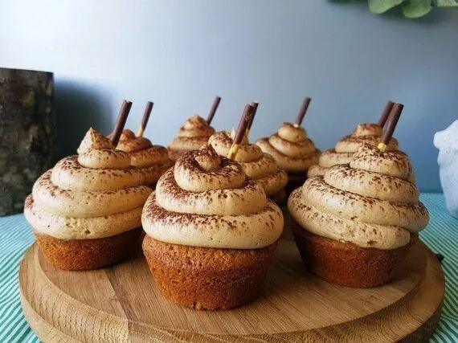

Cupcake Recipes
Delightful cupcakes for every occasion

Cappuccino Muffins
35 mins
12 muffins
Medium
Ingredients:
- 2 cups all-purpose flour
- 3/4 cup granulated sugar
- 2 1/2 tsp baking powder
- 1 tsp cinnamon
- 1/2 tsp salt
- 1 cup milk
- 2 tbsp instant coffee granules
- 1/2 cup butter, melted
- 1 large egg
- 1 tsp vanilla extract
- 1/2 cup mini chocolate chips
- 1/4 cup brown sugar (for topping)
- 1/4 cup chopped walnuts (for topping)
Instructions:
- 1Preheat oven to 375°F (190°C) and line muffin tin
- 2Combine flour, sugar, baking powder, cinnamon and salt
- 3Heat milk and dissolve coffee granules in it
- 4Whisk in melted butter, egg and vanilla
- 5Add wet ingredients to dry ingredients, stir until just combined
- 6Fold in chocolate chips
- 7Divide batter among muffin cups
- 8Mix brown sugar and walnuts, sprinkle on top
- 9Bake for 18-20 minutes until toothpick comes out clean
- 10Cool in pan for 5 minutes then transfer to rack

Chocolate Coffee Cream Cupcakes
45 mins
16 cupcakes
Intermediate
Ingredients:
- 1 3/4 cups all-purpose flour
- 3/4 cup unsweetened cocoa powder
- 1 1/2 tsp baking powder
- 1 1/2 tsp baking soda
- 1 tsp salt
- 2 cups granulated sugar
- 2 large eggs
- 1 cup whole milk
- 1/2 cup vegetable oil
- 2 tsp vanilla extract
- 1 cup boiling water
- 2 tbsp instant coffee granules
- 2 cups heavy cream (for frosting)
- 1/4 cup powdered sugar (for frosting)
- 1 tsp vanilla extract (for frosting)
- Chocolate shavings for garnish
Instructions:
- 1Preheat oven to 350°F (175°C) and line muffin tins
- 2Sift together flour, cocoa, baking powder, baking soda and salt
- 3Beat sugar and eggs until light and fluffy
- 4Add milk, oil and vanilla, mix well
- 5Gradually add dry ingredients, mixing until combined
- 6Dissolve coffee in boiling water, then add to batter
- 7Fill liners 2/3 full and bake for 18-20 minutes
- 8Cool completely before frosting
- 9For frosting: Whip cream with powdered sugar and vanilla
- 10Pipe frosting onto cooled cupcakes
- 11Garnish with chocolate shavings

Lemon Poppyseed Mini-cakes
40 mins
24 mini cakes
Medium
Ingredients:
- 2 1/2 cups all-purpose flour
- 2 tsp baking powder
- 1/2 tsp baking soda
- 1/2 tsp salt
- 1 cup unsalted butter, softened
- 1 1/2 cups granulated sugar
- 3 large eggs
- 1/4 cup lemon zest (about 4 lemons)
- 2 tbsp poppy seeds
- 1/2 cup lemon juice
- 1 cup buttermilk
- 1 tsp vanilla extract
- 2 cups powdered sugar (for glaze)
- 3-4 tbsp lemon juice (for glaze)
Instructions:
- 1Preheat oven to 350°F (175°C) and grease mini bundt pans
- 2Whisk together flour, baking powder, baking soda and salt
- 3Cream butter and sugar until light and fluffy
- 4Add eggs one at a time, beating well after each
- 5Mix in lemon zest and poppy seeds
- 6Combine lemon juice, buttermilk and vanilla
- 7Alternately add dry ingredients and wet ingredients to butter mixture
- 8Fill mini pans 2/3 full and bake for 15-18 minutes
- 9Cool in pans for 10 minutes then transfer to rack
- 10For glaze: Whisk powdered sugar and lemon juice
- 11Drizzle glaze over cooled mini cakes

Mini Strawberry Cheesecakes
1 hour + chilling
12 mini cheesecakes
Intermediate
Ingredients:
- 1 1/2 cups graham cracker crumbs
- 1/4 cup granulated sugar
- 6 tbsp melted butter
- 16 oz cream cheese, softened
- 2/3 cup granulated sugar
- 2 large eggs
- 1 tsp vanilla extract
- 1/2 cup sour cream
- 1 lb fresh strawberries, hulled
- 1/4 cup strawberry jam
- 1 tbsp lemon juice
Instructions:
- 1Preheat oven to 325°F (165°C) and line muffin tin with liners
- 2Mix graham crumbs, 1/4 cup sugar and melted butter
- 3Press 2 tbsp mixture into each liner to form crust
- 4Bake crusts for 5 minutes, then cool
- 5Beat cream cheese and 2/3 cup sugar until smooth
- 6Add eggs one at a time, then vanilla and sour cream
- 7Divide filling among cups, filling almost to top
- 8Bake for 20-22 minutes until centers are almost set
- 9Cool completely then refrigerate for at least 4 hours
- 10Blend half the strawberries with jam and lemon juice
- 11Slice remaining strawberries for topping
- 12Top each cheesecake with sauce and strawberry slices